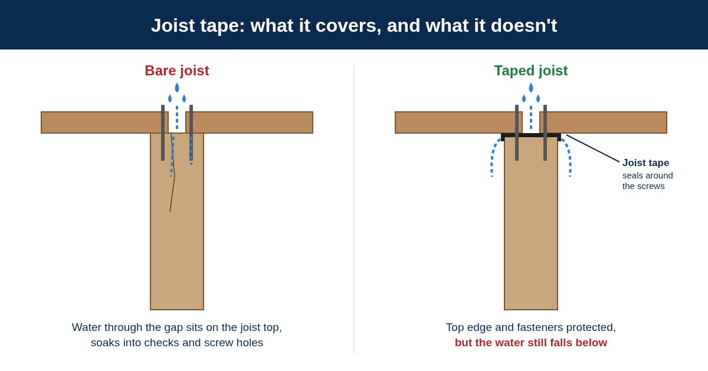

Joist tape is a self-adhered tape that some builders put on the tops of joists and beams before the deck boards go down. It is a patch for a problem built into conventional decks: the gaps between the boards let rain through, right onto the framing. An AmeriDex deck does not have that problem, so it does not need the patch.
Why conventional decks get wet framing
On a conventional deck, rain runs through the gaps between boards and lands right on top of the framing. That top edge is also where the deck boards sit tight against the wood, so it stays damp longer than the open sides, and it is where every deck screw punches a fresh hole into the joist. Pressure-treated lumber also tends to develop cracks (called checks) on its surface as it dries, and those can lead water deeper into the wood. That slow, repeated soaking is the pattern we cover in why decks rot from the top down.
Joist tape tries to cover that top edge. But the water still falls through the gaps and down to whatever is below, and the tape is one more layer to buy, put on, and hope stays sealed. Our post on water dripping through deck boards explains why gapped decks drip.
Tape tries to protect the framing from water. AmeriDex keeps the water off the framing.
How an AmeriDex deck keeps the framing dry
The boards lock onto the Dexerdry seal
The PVC deck boards lock onto the Dexerdry seal as they are installed, closing the gap between boards that lets rain through on a conventional deck.
Rain sheds off the surface
Rain hits the deck and is shed off the surface the way it runs off a roof, instead of dripping through onto the joists.
Water leaves at the low edge
The deck is pitched 1/8 inch per foot, so water runs to the low edge, past a drip edge, and away from the structure.
The framing and the space below stay dry
Because the joists stay dry and open, the space underneath becomes a dry space you can use, finish, or leave exposed.
What you skip with AmeriDex
- Taping the tops of every joist, beam, and board seam
- Waiting on dry weather so tape will stick
- Worrying about wrinkles or loose edges that can hold water against the wood
- Drips on whatever is under the deck
A dry deck starts with framing that is in good shape. If you are re-decking an existing frame and a screwdriver sinks into a joist, have a qualified deck builder look at it and replace the damaged framing before the new deck goes on.
Flashing still matters
Skipping joist tape does not mean skipping flashing. Every AmeriDex deck still needs the ledger flashed at the house and the gutter sealed at the low edge. The Dexerdry install help walks through each of those details, and our guide to deck ledger flashing covers how the layers lap so water is led out, not behind. Always follow your local code.
How this compares to below-joist systems
A below-joist drainage system hangs trays under the framing and catches water after it has already fallen through the deck, so the tops of the joists still get wet. An AmeriDex deck stops the water at the surface instead, so the framing never gets soaked in the first place. You can see how the two approaches compare in above-joist vs below-joist deck drainage.
Frequently asked questions
Do I need joist tape on an AmeriDex deck?
No. The boards lock onto the Dexerdry seal, so rain sheds off the deck surface instead of dripping through onto the joists. With the water kept off the framing, there is nothing for joist tape to do.
Why do other decks use joist tape?
On a conventional gapped deck, rain falls through the board gaps and lands on the tops of the joists and beams, right where every deck screw goes into the wood. Tape is a patch for that. An AmeriDex deck keeps the rain on top of the boards instead.
Where does the rain go on an AmeriDex deck?
The deck is pitched 1/8 inch per foot, so rain runs across the surface to the low edge, past a drip edge, and away from the structure. The framing and the space below stay dry.
Does an AmeriDex deck still need flashing?
Yes. Skipping joist tape does not mean skipping flashing. Flash the ledger at the house and seal the gutter at the low edge as the Dexerdry install help shows, and always follow your local code.
Joist tape is a patch for rain that gets through the deck. An AmeriDex deck keeps the rain on top, so the framing stays dry, the space below is a dry space you can use, and you can skip the tape.
Building new or re-decking?
A new deck or a full re-deck is the moment to keep the water off your framing for good. Start a free quote and tell us about your project, request free samples to see the boards and the Dexerdry seal up close, or read how to keep the space under a deck dry for the full picture.